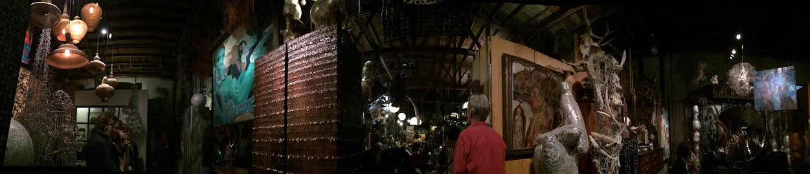
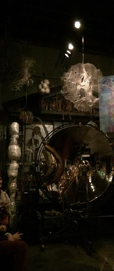
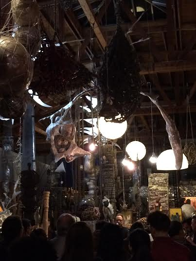

PAST EVENTS:

New Songs, New Stories
MorYork Gallery
4959 York Blvd
Los Angeles, CA 90042
With special guest(s):
Gregory McIlvaine
Lee Boek
Juli Emmel
More Info and RSVP by clicking HERE.
Come and join T.J. Troy, Nathaniel LaPointe, Ken Lasaine, and Adam Levy tell the next chapter in Run Downhill's ongoing Kilbourn Saga, bringing their deep and dark Country-Noir music to the most beautiful MorYork Gallery in Highland Park!
On the tail end of our screening at the Seattle True Independent Film Festival this past month, we will be performing our Song Comic album, SPURS #1, in its entirety, along with a brand new chapter, "It's all about the money." With brilliant artwork by Quinn Salazar and Chris Mcfann, this is not to be missed!
We are joined by a few special guest artists on this show as well: folk singer Gregory John McIlvaine sings Songs of the West, storyteller Lee Boek, and multi-instrumentalist Juli Emmel joins us on keyboards/piano.
Doors open at 7:30 pm
Show starts at 8:00 pm
$5

 